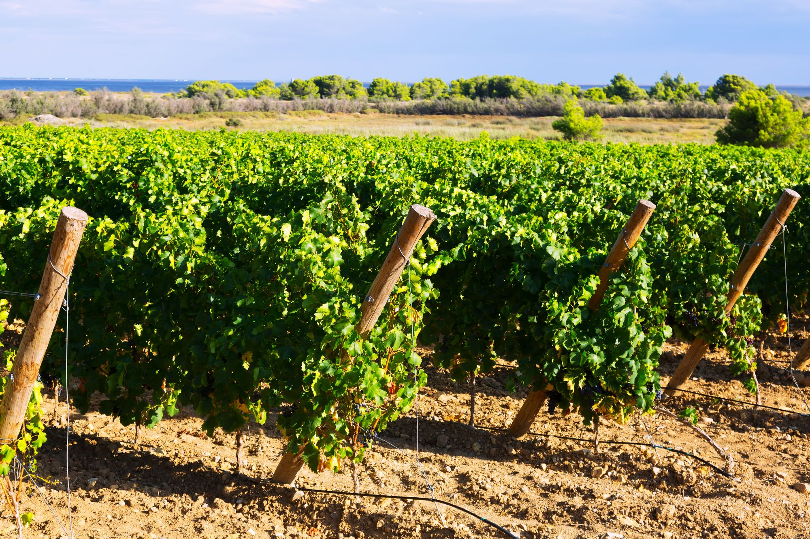

01

Land and acreage · Mesa County
Building lots, acreage, horse property and farm ground across the Grand Valley, with what to check on water, wells, septic and zoning before you buy.
Mesa County land
Land for sale around Grand Junction runs from building lots inside the city to acreage out past Loma, Mack and Whitewater, across a county of 3,329 square miles.
With land, the questions come before the price: whether water comes with it, whether a well or a septic system will work, and what the zoning allows. The sections below take each kind of land, then the records to check and the offices that keep them.
Dave has been licensed in Colorado since 2003 and has sales from Fruita and Loma to Clifton and Palisade. Tell him the acreage and what you want to do with it, and he will set up the search and pull the records on any parcel you are serious about.
Four kinds of land

Most of the larger parcels lie outside the city and town limits, where land falls under the Mesa County Land Development Code. Mesa County's own plans call Mack a rural community, and describe the Whitewater area as ranching land and open BLM land, low density and rural.
Out of town, ask early whether a parcel has a well permit, a septic system or a water tap; the checklist below shows where each record is kept.

Riders here have the Mesa County Fairgrounds' equestrian center on Orchard Mesa, Old Spanish Trail staging areas with horse trailer parking on Orchard Mesa and at Whitewater, and horseback riding at Highline Lake State Park north of Loma.
How many animals a parcel may keep depends on its zoning, so confirm it for the parcel before you count stalls or plan a barn.

The valley's farm ground runs on ditch water. Reclamation's Grand Valley Project first delivered water in 1917, the Government Highline Canal supplies Loma, and Redlands Water and Power Company serves the land south and west of the confluence of the Gunnison and Colorado rivers.
Loma's own plan records 1,000 acres opened to sugar beet growers in 1901, and the Grand Valley American Viticultural Area, a federal wine grape region, lies entirely within Mesa County.

A lot inside Grand Junction, Fruita or Palisade follows that city's or town's own code; a lot outside them follows the county's.
Before you buy one, find out who provides water and sewer at that address. In Clifton, for one, the Clifton Water District is the special district that serves the area, and where there is no sewer, the lot needs a septic permit from the county.

Fruita is its own city, with City Hall at 325 East Aspen Avenue, so land inside its limits follows the City of Fruita's rules and land just outside follows the county's.
North of town, the 18 Road trails sit on BLM land at the base of the Book Cliffs. The monument's west entrance is about three miles south on Highway 340, and Mack lies about eight and a half miles west, past Loma's farm country. The Fruita page covers the city itself.
Saved searches
Search by place and price, or start from one of these saved searches. Save a search, and new listings that match it come to you by email.
01

02

03

04

$529,000
3 beds · 2 baths · 1,640 sq ft · 6.4 acres
Listed by The Agency Grand Junction

$612,000
3 beds · 2 baths · 1,860 sq ft · 2.1 acres
Listed by The Agency Grand Junction

$410,000
3340 C 1/2 Road Palisade, CO 81526
4.2 acres · vineyard
Listed by The Agency Grand Junction
Before you buy
Dave can pull these records for any parcel you are serious about. On water rights and wells, the Division of Water Resources and a water attorney have the final word.
Questions
Colorado allots water by priority, first in time, first in right, and the water courts decree the rights. A right that has gone unused for ten years or more is presumed abandoned, so ask the seller what water comes with the parcel and how it has been used.
Every new well in Colorado needs a permit from the Division of Water Resources, and an existing well's permit file lists the uses allowed. Look the parcel up in the state's well permit search before you count on one.
Mesa County's Septic (OWTS) Department issues septic permits and septic clearances and reviews land use applications that propose a septic system. The county Building Department inspects the installation.
It depends which side of the city limits the parcel is on: inside them, the City of Fruita's rules apply; outside, the Mesa County Land Development Code does. Confirm the jurisdiction for the parcel before you plan a build.
Contact
Call or text (970) 261-3266 with the acreage, the area and what you want to do with it, and he will set up the search and pull the records on the parcels worth a look.